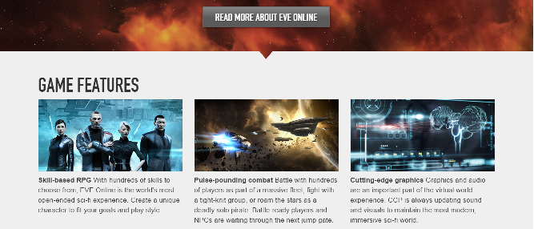
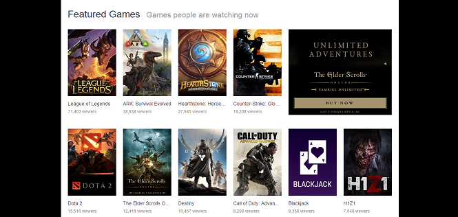

Google searches are a great example of this, nothing overly flashy or colorful. It simply displays the information you need right there.
There are only a few options presented at the top of the screen, in order to make it easier for people to find what they need based on those categories instead of a large number of them.
Very little information is actually shown on the blizzard home page at once, to get information more specifically about certain games you must select that game, creating small little chunks of information for each game instead of lots of text for all of them at once.

On the site for eve online, the information presented on the home page when you scroll down is presented in divisions of thirds, following the rule of thirds and creating a more pleasing design.

Twitch follows the 80/20 rule by showing a list of the most popular games at the moment, knowing that the majority of viewers are going to be coming to watch the first few games on that list. Instead of trying to show every game, it features and focuses the most important and most used ones.